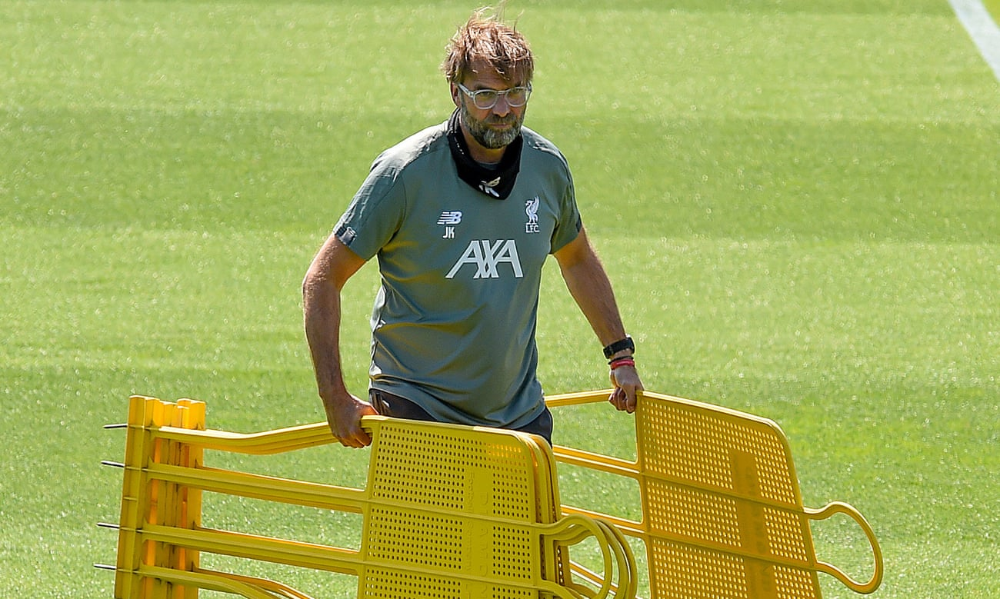
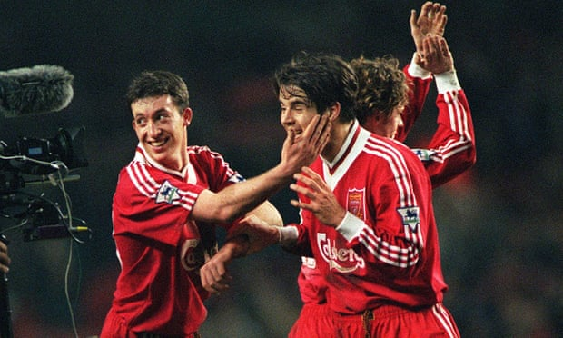
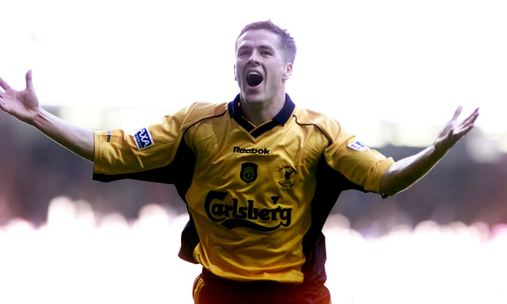
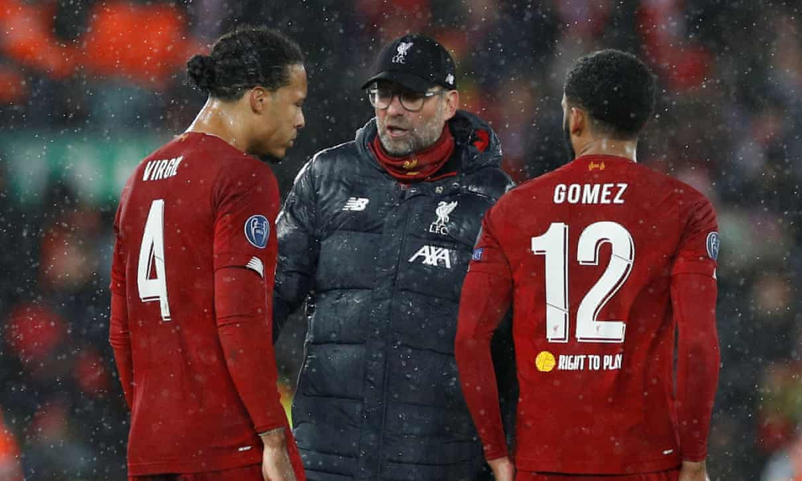
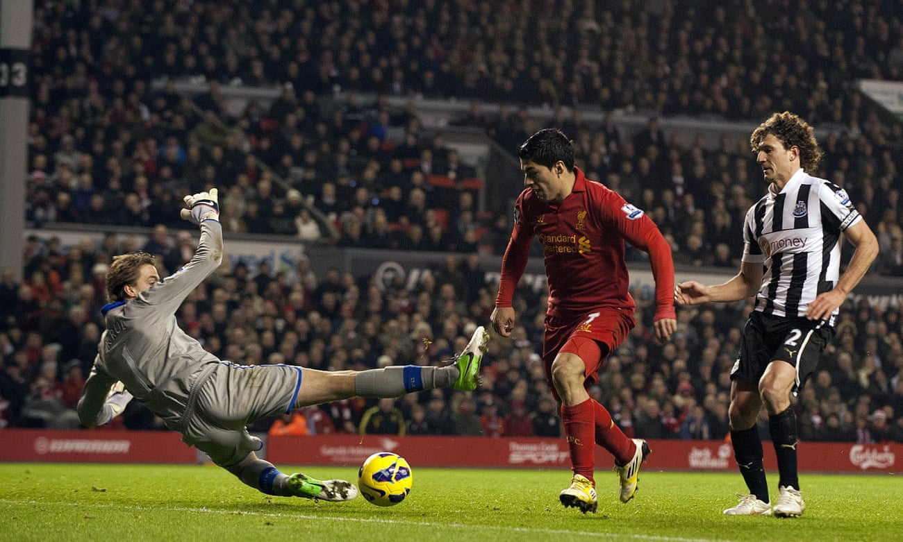

SPORTS WORLD
Football Blogs
-
Jürgen Klopp: on clothes, the keys to coaching and Liverpool team talks

our football has to be mirrored by your soul,” Jürgen Klopp says as he explains why his appearance on the touchline has no effect on his team’s performance. Liverpool’s manager is midway through a fascinating answer about his dress code and has an important message for the aspiring coaches listening to him on Zoom. “You have to bring your own character in.” This is an unusual setting for Klopp. It is Liverpool’s first day back in phase one training but the manager of the Premier League’s dominant force has given up part of his afternoon to take part in a mentoring session for Kick It Out, football’s anti-discrimination charity. Troy Townsend, Kick It Out’s head of development, has got top coaches involved in the organisation’s Raise Your Game programme – England’s Gareth Southgate is another star attraction – and has landed Klopp. Read More... -
Liverpool 4-3 Newcastle United: Premier League 1996 – as it happened!

It was just one of those games. Such entertainment, a tale told at a million miles an hour from the get-go. On this evidence, either team would be a worthy champion ... though knocking Manchester United off their perch may now be easier said than done. This amazing title race, however it pans out, is certain to stay with us for a mighty long time. Whatever happens next, we’re sure to love it. Love it. Thanks so much for reading this MBM! Nighty night!“Disappointed, but we lost nothing in defeat here today. Whatever they charge here, I don’t think people will be sending their tickets back saying they want a refund! A lot of energy and some great goals in a terrific atmosphere at a great stadium. Read More... -
My favourite game: Michael Owen inspires Liverpool to FA Cup glory

I was 11 years old and Liverpool and Arsenal were stuffed with my heroes. I grew up on a diet of local loves: Robbie Fowler, Steven Gerrard, Jamie Carragher and, my king (in Liverpool’s gold strip), Michael Owen. The Joy of Six: the best of Michael Owen Read more But Arsenal were – if Liverpool evaporated and I was forced to choose – my second favourites. The good looks and sharp cheekbones of Freddie Ljunberg (and opening scorer) stood out but more important was the genius of Dennis Bergkamp and the artfulness of Thierry Henry and Patrick Vieira. The erudite frown of Wenger I found a refreshing change from the gum-chewing, hands-in-pockets style of other managers. (I felt this way about Houllier, too, of course). Given the extravagant finals Liverpool have been involved in, the 2001 version often gets lost. Arsenal dominated throughout, which made it a frustrating watch for large periods, but it did have everything as a game: numerous goal-line clearances (Sami Hyypïa acting like a third goal post); a goal conceded because of a horrific goalkeeping mistake (Sander Westerveld passing straight to Arsenal, resulting in a Robert Pires through ball and a slick Ljungberg finish); a strong handball shout; and a two-goal swing to win the game. The artist? Owen, of course. Read More... -
Jürgen Klopp says Liverpool will be ready for 'wonderful game' to return

Jürgen Klopp says Liverpool will be mentally and physically ready for the resumption of the Premier League season and football will remain a “wonderful game” even when played at empty stadiums. Liverpool are, at most, only two wins from claiming their first league title for 30 years and could return to training in small groups on Tuesday providing the Project Restart plan is approved on Monday. The first stage would see players tested for Covid-19 twice a week. Single failed Covid-19 test spells quarantine for Premier League squads Read more Several Premier League players, however, have voiced concerns over protocols for the next, higher-risk phase of training, and Project Restart rests on gaining their consent. Those concerns are just one complication in the Premier League’s aim to restart on 12 or 19 June, with clubs wanting two weeks of contact training before returning to competitive action. Liverpool reopened Melwood for individual training on 7 May and, despite the uncertainty over the return date, Klopp has no doubts over his players’ preparation. Asked on BBC’s Football Focus whether his players will be ready to start, the Liverpool manager said: “Yes. Look, football is a game where pretty much we have the same situation. We play against another team. Premier League's Covid-19 code of conduct form explained Read more “We don’t have to be at our all-time best, we have to be at our best possible and that is exactly the same situation for the other teams. Whenever we will start we will have the same time for preparation and our job, as always, is to use the situation you are in. We will be in as good a shape as possible and that is what we have to use then.” Read more... -
'Unbelievable': José Enrique relives Luis Suárez's Liverpool goal v Newcastle

A special goal by a special player – Luis Suárez. Enrique’s face lights up at the mere mention of the forward he played alongside at Liverpool, with the Spaniard’s mood only darkening as he talks about the incidents that “killed” Suárez’s time in England. But overall the memories are positive – off the pitch Enrique and Suárez became friends while on it they formed a strong and productive relationship, seen most brilliantly on a cold Sunday afternoon in November 2012. My favourite game: Uruguay v Ghana, World Cup 2010 quarter-final Read more Newcastle United, the team Enrique had left in order to join Liverpool 15 months earlier, were the visitors to Anfield. They were in decent form but so too were the hosts, a young, dynamic side under a young dynamic manager in Brendan Rodgers. And they began well, dominating possession and chances. Cue shock, then, when Newcastle took the lead through Yohan Cabaye’s drive from an acute angle two minutes before half-time. It was a body blow for Liverpool and they needed a response, which they got on 67 minutes – a goal from Suárez, and perhaps the best he ever scored for the club. Advertisement That may be deemed a wild overstatement given the array of goals Suárez struck during his three-and-a-half years in a red shirt. It is hard to pick a winner, and that’s just from those against Norwich. But the one he put past Newcastle really was something else. “The touch of a genius,” was how Martin Tyler described it in commentary while from Enrique, who made it possible with a long pass from left-back, comes particularly striking praise: “It is one of the best goals I’ve ever seen from any player.” Rean more...
About Us
365 Sector-4,Hiran Magri,Udaipur (Rajasthan) Pin-code: 313329